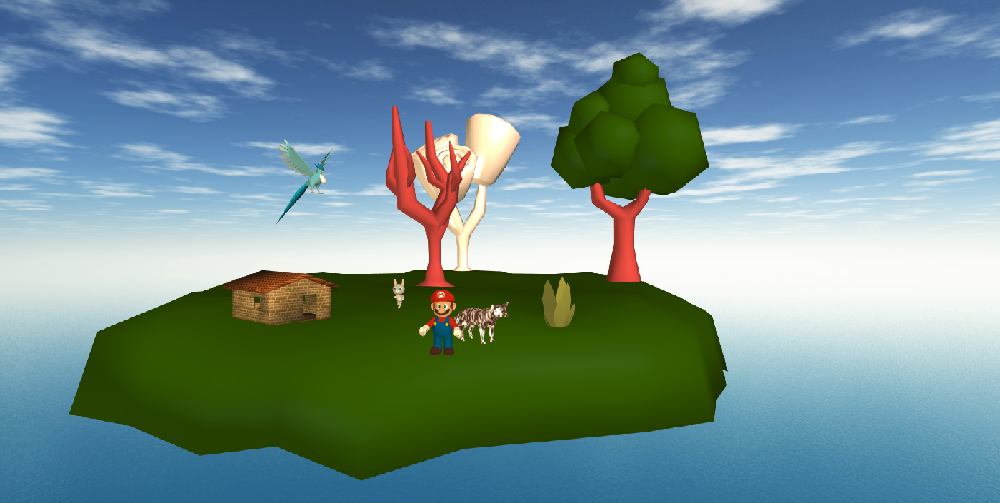
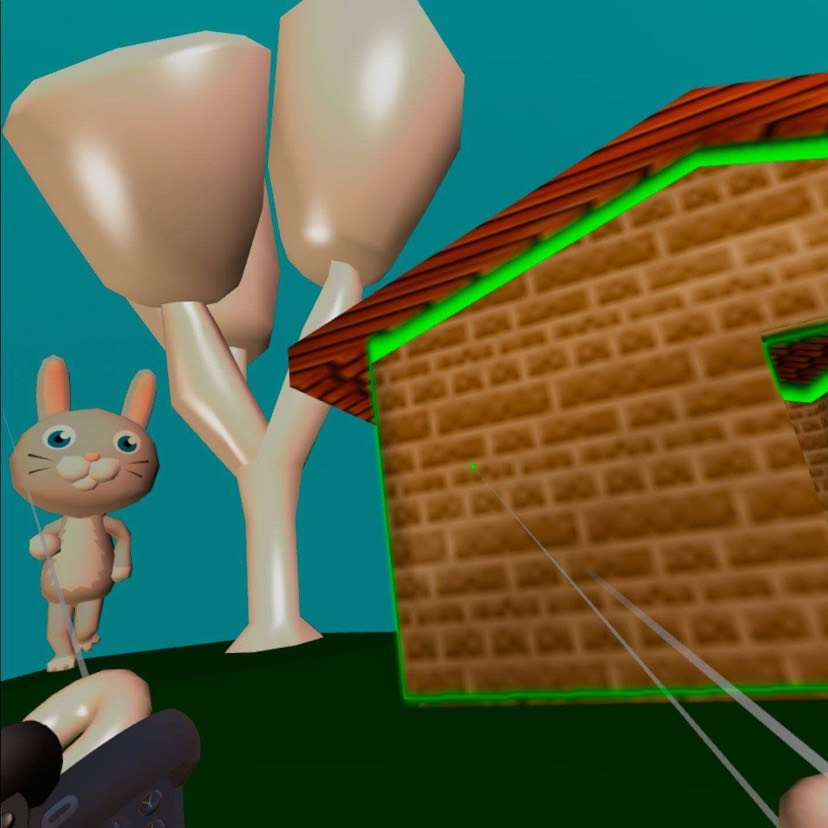

Ruoyan Kong
Home
Education
Research
Interests
Getting Started with WebXR
Creating Virtual Environments
A Simple Beat Saber in Babylon & Oculus Quest
Worlds in Miniature
Virtual Locomotion
A Simple Beat Saber in Babylon & Oculus Quest
https://www-users.cselabs.umn.edu/~kong0135/Assignment-4/
Worlds in Miniature
https://www-users.cselabs.umn.edu/~kong0135/Assignment-5/
Virtual Locomotion
https://www-users.cselabs.umn.edu/~kong0135/Assignment-6/
Creating Virtual Environments
https://www-users.cselabs.umn.edu/~kong0135/Assignment-2/

Figure 2. Mario and his animal friends are playing on a grassland.
Getting Started with WebXR
The experience must run on the Oculus Quest.
https://www-users.cselabs.umn.edu/~kong0135/Assignment-3/

Figure 1. Effect on Oculus Quest